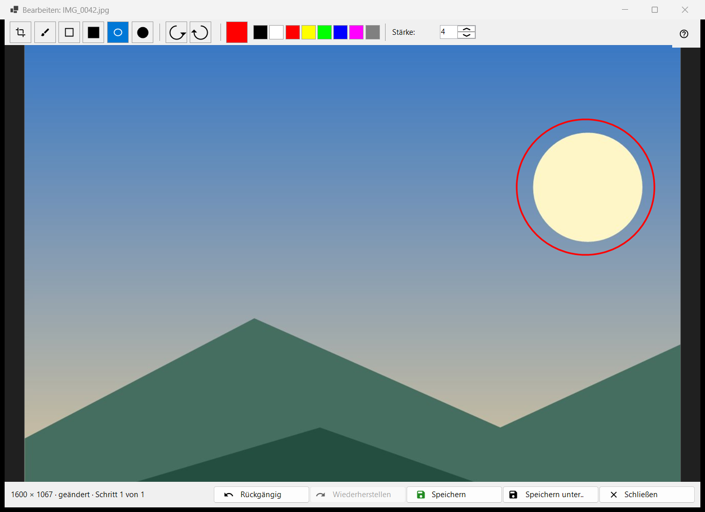
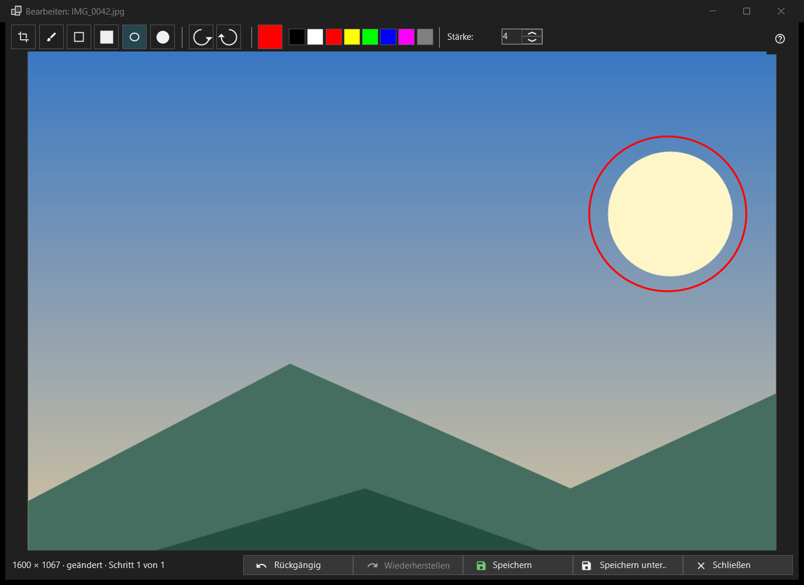

Bild bearbeiten
Verwendungszweck
Ein kleiner Editor für ein einzelnes Standbild: Formen zeichnen, zuschneiden, drehen und spiegeln, dann über das Original speichern oder als neue Datei. Er öffnet sich, mit dem Dateinamen des Bildes im Titel, über die Schaltfläche Bearbeiten der Symbolleiste oder den ersten Eintrag des Bildmenüs, und nur für ein Standbild (nicht für eine Animation). Der Editor liest die Datei neu ein und arbeitet an einer eigenen Kopie.


In dieser Reihenfolge
- Drücken Sie im Viewer auf Bearbeiten.
- Wählen Sie ein Werkzeug, eine Farbe und eine Stärke.
- Zeichnen Sie auf das Bild oder schneiden, drehen oder spiegeln Sie es; Rückgängig geht einen Schritt zurück.
- Drücken Sie Speichern, um das Original zu überschreiben, oder Speichern unter.. für eine neue Datei.
- Schließen Sie das Fenster; bei ungespeicherten Änderungen beantworten Sie die Frage.
Die Elemente
Werkzeuge
In der Leiste: Zuschneiden, Pinsel, Rechteck, Gefülltes Rechteck, Ellipse und Gefüllte Ellipse. Die Tasten sind C, B, R und O (die gefüllten haben keine). Halten Sie beim Zeichnen eines Rechtecks oder einer Ellipse Shift gedrückt, um ein Quadrat oder einen Kreis zu erhalten. Wenn Sie mit der Maus über einem Werkzeug verweilen, erscheinen sein Name und seine Taste.
Farbe und Stärke
Die Farbschaltfläche öffnet den Farbdialog, und daneben liegen acht Schnellfarben (Schwarz, Weiß, Rot, Gelb, Hellgrün, Blau, Magenta, Grau). Die Stärke reicht von 1 bis 64 Bildpixeln (Standard 4); die Tasten [ und ] ändern sie um eins. Farbe und Stärke gelten für alle Werkzeuge gemeinsam.
Zuschneiden
Ziehen Sie mit dem Werkzeug Zuschneiden einen Rahmen auf das Bild. Die Schaltfläche Zuschnitt anwenden erscheint nur, solange ein Rahmen existiert. Enter tut dasselbe; Esc entfernt den Rahmen, ohne zuzuschneiden. Das Bild wird erst beschnitten, wenn Sie den Zuschnitt anwenden.
Drehen und Spiegeln
Nach links drehen (Ctrl+[) und Nach rechts drehen (Ctrl+]) drehen die Pixel. Die Tasten H und V spiegeln das Bild horizontal und vertikal. Das verändert das Bild selbst, anders als R im Viewer, das nur die Anzeige dreht.
Rückgängig und Wiederherstellen
Rückgängig (Ctrl+Z) und Wiederherstellen (Ctrl+Y oder Ctrl+Shift+Z) gehen den Verlauf von bis zu 20 Schritten durch, begrenzt durch den Speicher. Die Statuszeile zeigt die Größe und nach einer Änderung geändert mit Schritt N von M; verwirft die Speichergrenze die ältesten Schritte, steht dort Alte Schritte wurden verworfen: Speichergrenze.
Speichern
Speichern (Ctrl+S) überschreibt das Original und ist erst nach einer Änderung aktiv; davor lautet sein Tooltip Nichts zu speichern: Das Bild wurde nicht geändert. Bei einem JPEG werden Sie einmal pro Sitzung gefragt: Das JPEG wird neu komprimiert - das lässt sich nicht rückgängig machen. Das Aufnahmedatum und die übrigen EXIF-Daten bleiben erhalten. Die Datei wird unter einem temporären Namen geschrieben und ausgetauscht; schlägt das Speichern fehl, bleibt das Fenster mit dem Grund offen.
Speichern unter..
Öffnet einen Dateidialog mit dem um (bearbeitet) ergänzten Namen. Die Formate sind PNG, JPEG, BMP, TIFF und WebP; ein Bild in einem anderen Format wird als PNG angeboten. Ein temporärer Ordner eines Archivs wird abgelehnt. Nach dem Überschreiben des Originals lädt der Viewer es neu; eine neue Datei im selben Ordner wird geöffnet; eine an anderer Stelle wird in der Statuszeile genannt.
Wenn Speichern aus ist
Die Statuszeile sagt Das Original kann nicht überschrieben werden, mit dem Grund: dieses Format wird nicht geschrieben, die Datei ist schreibgeschützt, keine Schreibrechte, eine andere Anwendung hält die Datei, die Datei hat mehrere Seiten oder Einzelbilder (bearbeitet wird nur das erste), sie liegt in einem Archiv oder sie fehlt. Speichern unter.. bleibt möglich.
Schließen
Schließen oder Esc schließt das Fenster; Esc bricht zuerst einen laufenden Strich ab und entfernt dann den Zuschnittsrahmen. Bei ungespeicherten Änderungen lautet die Frage: Die Änderungen sind nicht gespeichert - Den Editor schließen und die nicht gespeicherten Änderungen verlieren? Speichern speichert zuerst, Nicht speichern verwirft, Abbrechen (die Standardantwort, auch Esc) bleibt im Editor. Diese Frage wird auch gestellt, wenn Bestätigungen ausgeschaltet sind.